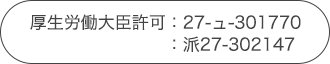

{{ errorMessages.qualification }}
無料
次へ進む
{{ errorMessages.workStyle }}
戻る
{{ errorMessages.zipCode }}
{{ errorMessages.prefecture }}
{{ errorMessages.city }}
{{ errorMessages.name }}
次が最後の項目
お電話にて非公開求人をご紹介いたします。
{{ errorMessages.tel }}
{{ errorMessages.email }}
利用規約と個人情報の取扱いに同意して登録
徹底した管理体制で大切な個人情報をお守りします。介護ワーカーを運営する（株）トライトキャリアはプライバシーマークを取得しております。